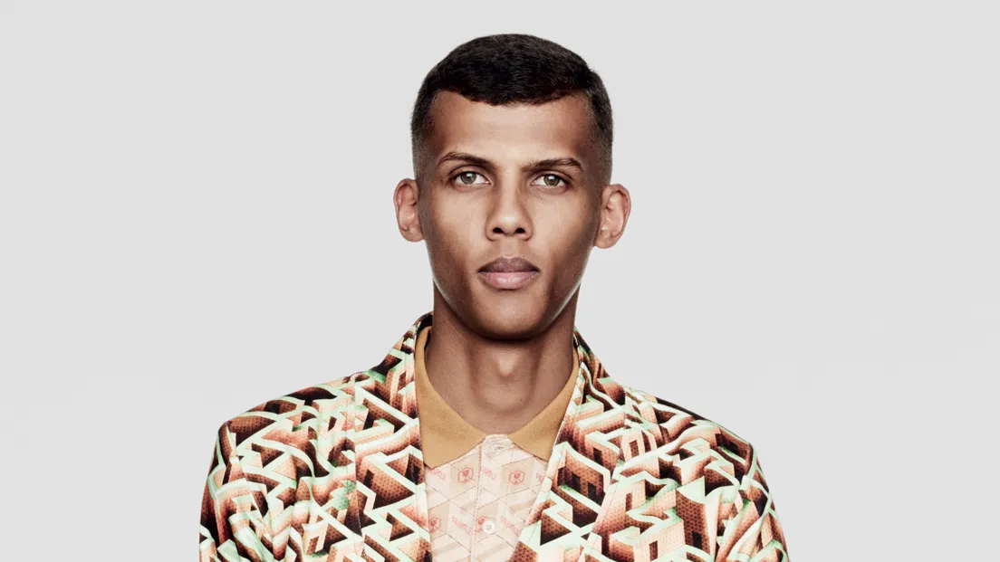

Stromae
Born: 12 March 1985
Age:
Years Active: 2000–present
Genre/s: Hip hop, house, electronic, electropop, synth-pop, new beat, eurodance
Label/s: Mosaert, B1, Vertigo, Mercury, Universal, Republic, Casablanca, Island, Columbia, Polydor, Interscope
Paul Van Haver (born 12 March 1985), better known by his stage name Stromae, is a Belgian singer, rapper, songwriter and record producer. He is best known for his music, which is a blend of hip-hop and electronic music styles. Stromae came to wide public attention in 2009 with his song "Alors on danse" (from the album Cheese), which became a number one in several European countries. In 2013, his second album Racine carrée was a commercial success, selling two million copies in France and yielding chart-topping singles "Papaoutai" and "Formidable".
Paul Van Haver was born in Brussels and raised in the city's Laken district, to a Tutsi father from Rwanda, Pierre Rutare, and a Flemish mother, Miranda Van Haver. He said in an interview that he also has distant Somali heritage from his father's side. He and his siblings were raised by their mother, as their father, an architect, was killed during the 1994 Rwandan genocide while visiting his family.
On his absent father, he declared in 2019, "My father was never there for me. He left right away. He was a runner, a flirt. I learned much later that I had half-siblings. He was an architect who went back and forth between Belgium and Rwanda. I must have seen him twenty times in my life, and he died during the Rwandan genocide. But he had already disappeared for me, and when I learned of his death, I didn't cry. Perhaps I hadn't prepared myself. The fact remains that we won't be able to make up for lost time with this dad we didn't see when we were little."
He attended the Sacred Heart School Center in Jette [fr], a Jesuit school in Jette, and the Collège Saint-Paul in Godinne, after failing in the public school system at the age of 16. He formed a small rap group with his friends while still in school. His early influences included Belgian singer-songwriter Jacques Brel, son cubano and Congolese rumba.